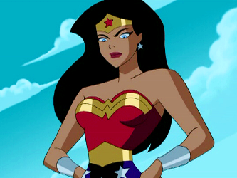
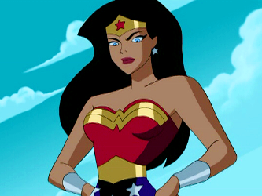

Diana Prince was hand crafted out of clay by her mother, Queen Hippolyta of Themyscira, and brought to life by Zeus, father of the Gods.
From Princess of Themyscira and a warrior she traveled to the outside world and became Diana Prince. The Amazonian posed as an army nurse then to Hero as Wonder Woman.
 In 2016, when Batman v. Superman premiered, Gal Gadot brung the DC superhero Wonder Woman to the screen for the first time.
On June 2,2017 the first Wonder Woman film will premiere.
Lynda Carter was the first Wonder Woman ever! She starred in the TV series Wonder Woman from 1975 to 1979.

Wonder Woman was given an animated film in 2009. Prior to her animated film she appear in other medias such as video games, comic strips, amd films.
Advice on what comic books to read
In 2016, when Batman v. Superman premiered, Gal Gadot brung the DC superhero Wonder Woman to the screen for the first time.
On June 2,2017 the first Wonder Woman film will premiere.
Lynda Carter was the first Wonder Woman ever! She starred in the TV series Wonder Woman from 1975 to 1979.

Wonder Woman was given an animated film in 2009. Prior to her animated film she appear in other medias such as video games, comic strips, amd films.
Advice on what comic books to read